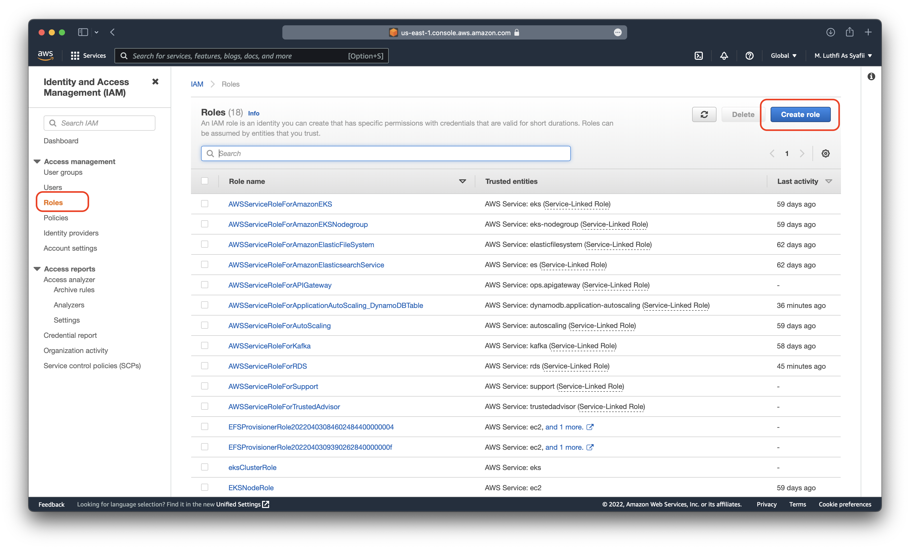
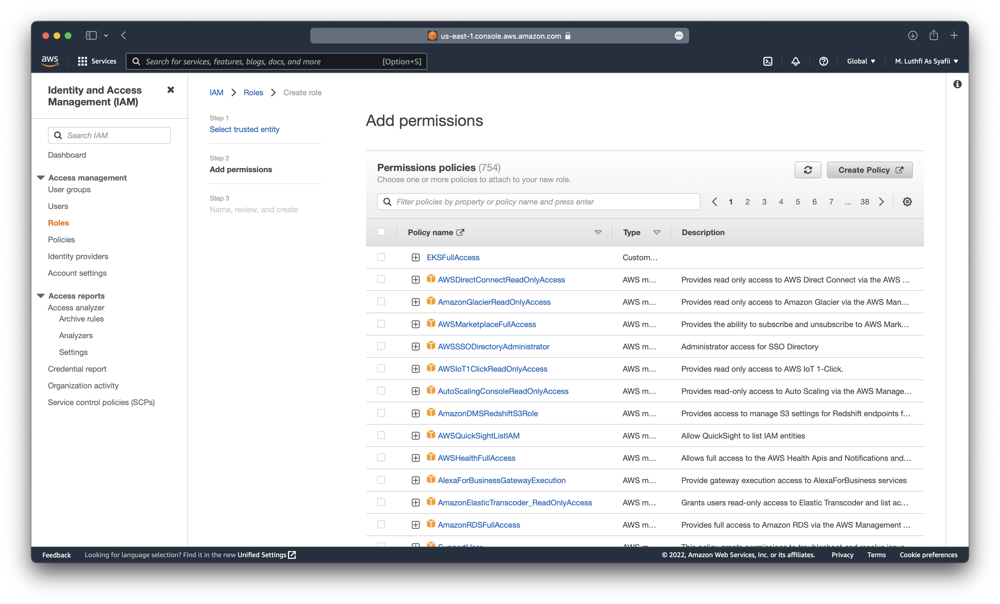
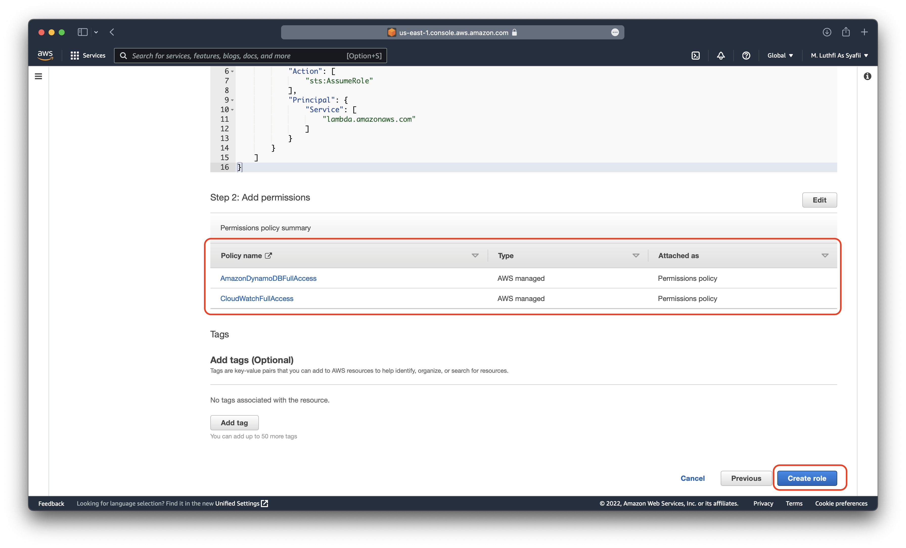
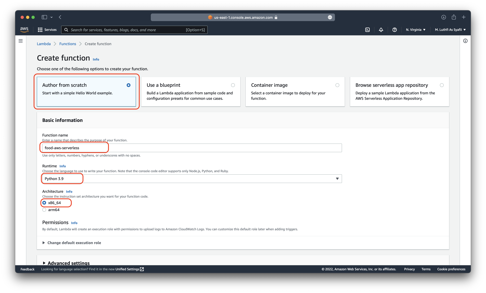
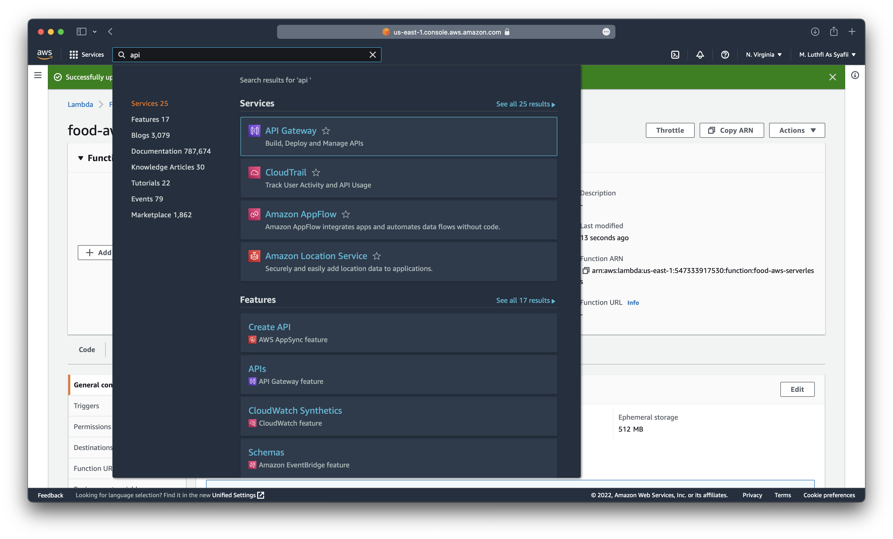
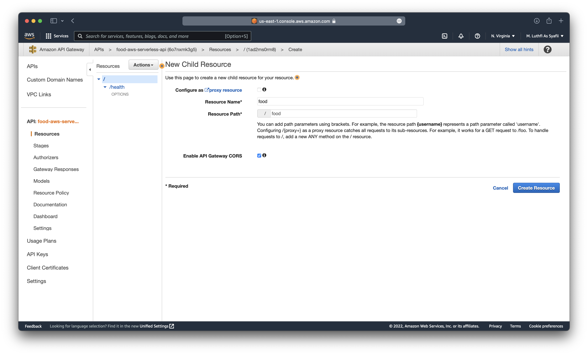

Deploy CRUD using AWS API Gateway, Serverless Lambda and RDS
Specification : AWS, API Gateway, Serverless, Lambda, RDS, Postman
Lab Topology


Step-by-step
- Create IAM role for allow configuration
- Create Database table with DynamoDB
- Create AWS API Gateway service
- Create Lambda function
- Testing CRUD with postman
- Verify
A. Create IAM role
First step is create IAM role to allow Lambda function to call AWS services, for it you can follow guide bellow :
- Login to your AWS console, search and chose IAM menu

- Choose
Rolesand createrole

- Choose AWS Services -> Lambda and Next
-
And you can see menu bellow 
-
For integrate lambda with RDS & cloudwatch, wee need filter & checklist
cloudwatchfullaccess
-
And the last one, search
dynamodband checklist full access permissions
-
Add rolename
-
Verify you already added two roles for it, and create role 
B. Create RDS DynamoDB Table
Next step we need create database for store data, with step bellow :
- Choose DynamoDB services

- Choose Dashboard and create
Table

- Put table name, you can same with our tutorial use
food-aws-serverlessand putPartition KeywithfoodIdfor indexing like bellow, and create table

- You can see table after created

C. Create Lambda Function
- After create RDS, next create Lambda function to integrate between API Gateway to RDS DynamoDB

- Choose
Functionsandcreate function

- And follow function like bellow and create function


- And you can see lambda function has been created, after that we need increase specs of lambda with step bellow. Click
configuration > Edit, Increase value of Memory and Storage and save.


- And
Importantstep is createlambda functionfor CRUD, choose code > edit lambda_function.py > copas code from bellow > and last deploy
lambda_function.py
import boto3
import json
from botocore.vendored import requests
from custom_encoder import CustomEncoder
import logging
logger = logging.getLogger()
logger.setLevel(logging.INFO)
dynamodbTableName = 'food-aws-serverless'
dynamodb = boto3.resource('dynamodb')
table = dynamodb.Table(dynamodbTableName)
getMethod = 'GET'
postMethod = 'POST'
patchMethod = 'PATCH'
deleteMethod = 'DELETE'
healthPath = '/health'
foodPath = '/food'
def lambda_handler(event, context):
logger.info(event)
httpMethod = event['httpMethod']
path = event['path']
if httpMethod == getMethod and path == healthPath:
response = buildResponse(200)
elif httpMethod == getMethod and path == foodPath:
response = getFood(event['queryStringParameters']['foodId'])
elif httpMethod == postMethod and path == foodPath:
response = saveFood(json.loads(event['body']))
elif httpMethod == patchMethod and path == foodPath:
requestBody = json.loads(event['body'])
response = modifyFood(requestBody['foodId'], requestBody['updateKey'], requestBody['updateValue'])
elif httpMethod == deleteMethod and path == foodPath:
requestBody = json.loads(event['body'])
response = deleteFood(requestBody['foodId'])
else:
response = buildResponse(404, 'Sorry, Not Found')
return response
def getFood(foodId):
try:
response = table.get_item(
Key={
'foodId': foodId
}
)
if 'Item' in response:
return buildResponse(200, response['Item'])
else:
return buildResponse(404, {'Message' : 'FoodId: %s not found' % foodId})
except:
logger.exception('Do your custom error handling here, I am just gonna log it out there!')
def saveFood(requestBody):
try:
table.put_item(Item=requestBody)
body = {
'Operation' : 'SAVE',
'Message' : 'SUCCESS',
'Item' : requestBody
}
return buildResponse(200, body)
except:
logger.exception('Do your custom error handling here, I am just gonna log it out there!')
def modifyFood(foodId, updateKey, updateValue):
try:
response = table.update_item(
Key={
'foodId': foodId
},
UpdateExpression='set %s = :value' % updateKey,
ExpressionAttributeValues={
':value': updateValue
},
ReturnValues='UPDATED_NEW'
)
body = {
'Operation': 'UPDATE',
'Message': 'SUCCESS',
'UpdatedAttrebutes': response
}
return buildResponse(200, body)
except:
logger.exception('Do your custom error handling here, I am just gonna log it out there!')
def deleteFood(foodId):
try:
response = table.delete_item(
Key={
'foodId': foodId
},
ReturnValues='ALL_OLD'
)
body = {
'Operation': 'DELETE',
'Message': 'SUCCESS',
'UpdatedAttrebutes': response
}
return buildResponse(200, body)
except:
logger.exception('Do your custom error handling here, I am just gonna log it out there!')
def buildResponse(statusCode, body=None):
response = {
'statusCode' : statusCode,
'headers' : {
'Content-Type': 'application/json',
'Access-Controll-Allow-Origin': '*'
}
}
if body is not None:
response['body'] = json.dumps(body, cls=CustomEncoder)
return response
- And last on is create new file named
custom_encoder.py> put code bellow > anddeployagain.

custom_encoder.py
import json
from decimal import Decimal
class CustomEncoder(json.JSONEncoder):
def default(self, obj):
if isinstance(obj, Decimal):
return float(obj)
return json.JSONEncoder.default(self, obj)
D. Create AWS API Gateway
Next is create Rest API gateway, to interact between and user & AWS services, for more you can follow bellow step :
- Choose
AWS API Gatewaymenu

- Choose
Public REST APIandbuild

- Click REST > New API and put API name

- And next
create Resourcefor place are API Method, bellow for detail structure :
1. Resource /health
Method GET
2. Resource /food
Method GET, POST, PATCH, DELETE
3. Resource /foods (optional, not important)
Method GET, POST, PATCH, DELETE

- Input
Resource name,Resource pathand checklist Enable API Gateway
- And create also for /food resource like above

- After create
Resource, next createMethodfor every resource. Click Resource name, for example/health> Create Method
1. Resource /health
Method GET
2. Resource /food
Method GET, POST, PATCH, DELETE
3. Resource /foods (optional, not important)
Method GET, POST, PATCH, DELETE

- Chose Method, for example
GETand click OK

- Checklist
Lambda Function> Proxy integration > and choseLambda Functionpreviously created > save

- Click OK for continue, and REPEAT create Method for
every resourcelike it and follow structure

- After all
Method and Resourcehas been created, last step isDeploy APIlike bellow
- Create new stage name, for example:
prod, and finish you already created API Gateway

E. Testing & Verify CRUD
- Before testing, you need download
Postman Applicationfor testing API, download on : https://www.postman.com/downloads/ - First step is copy API Endpoint in APIs menu to access from public internet

GET Option (Health Check)
To check API status reached or not, with status 200 OK

POST Option
To Put new database to RDS via Json format file (key-value), bellow example to add data :
{
"foodId": "001",
"name": "Banana",
"price": "500"
}


And you can see result success POST in DynamoDB table menu :

DELETE Option
For delete database on RDS you can use delete option with index ID (foodId) like bellow
And you can see after deleted foodId = 002 on RDS Table
GET Option
To check detail table by foodId

PATCH Option
Patch you can use for update about value/key, bellow example for update banana price, from 500 to 99999


Reference
- Felix Yu Channel : https://www.youtube.com/watch?v=9eHh946qTIk&list=LL&index=32&t=159s